Wagali s'enracine dans une terre d'histoire, de dignité et de diversité. Découvrez le patrimoine du Pays des Hommes Intègres.
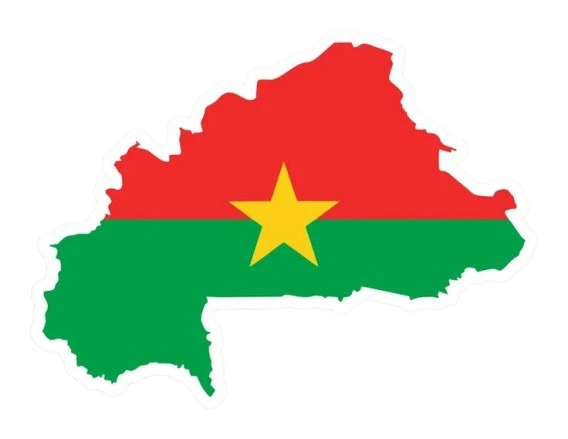
Anciennement Haute-Volta, le pays est renommé **Burkina Faso** ("La patrie des hommes intègres") en 1984 par Thomas Sankara. Avec ses 274 200 km² au cœur de l'Afrique de l'Ouest, il est un carrefour de 23 millions d'âmes.
Bankui, Djôrô, Goulmou, Guiriko, Kadiogo, Kuilsé, Liptako, Nando, Nakambé, Nazinon, Oubri, Sirba, Soum, Tannounyan, Tapoa, Sourou et Yaadga.
Une mosaïque de Mossis, Peuls, Gourmantchés et Bobos. Une richesse portée par le FESPACO et des traditions orales vivantes.
Des savanes soudano-sahéliennes aux plaines verdoyantes du sud, portées par un climat tropical unique.
L'agriculture, l'élevage et l'or constituent le socle d'une économie résiliente face aux défis contemporains.
Président du Faso. Vision : Restauration de la souveraineté, industrialisation et autosuffisance alimentaire.
Ministre de la Communication, de la Culture, des Arts et du Tourisme. Gardien du patrimoine et de l'image du pays.
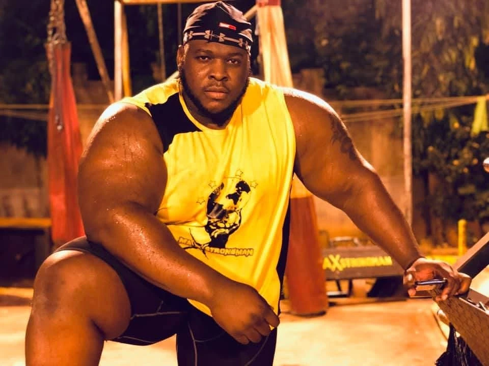
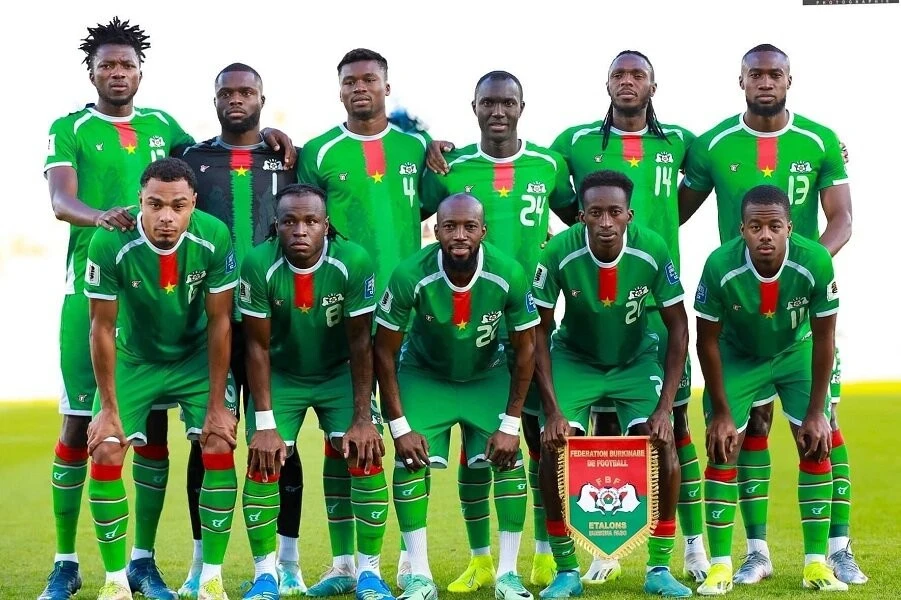
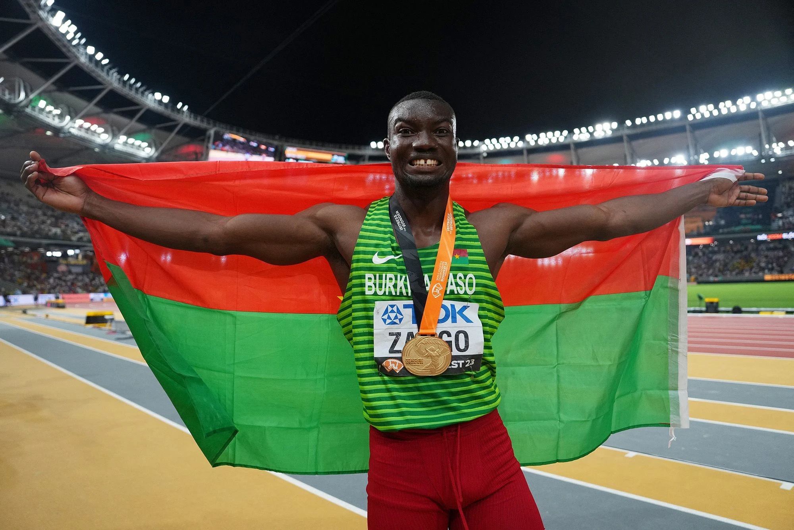
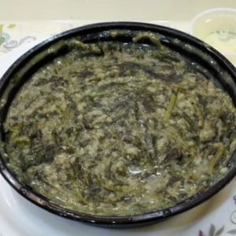
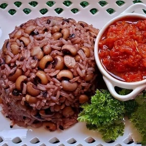
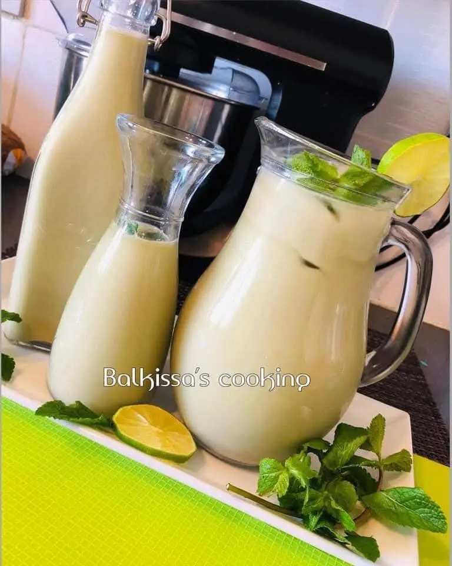
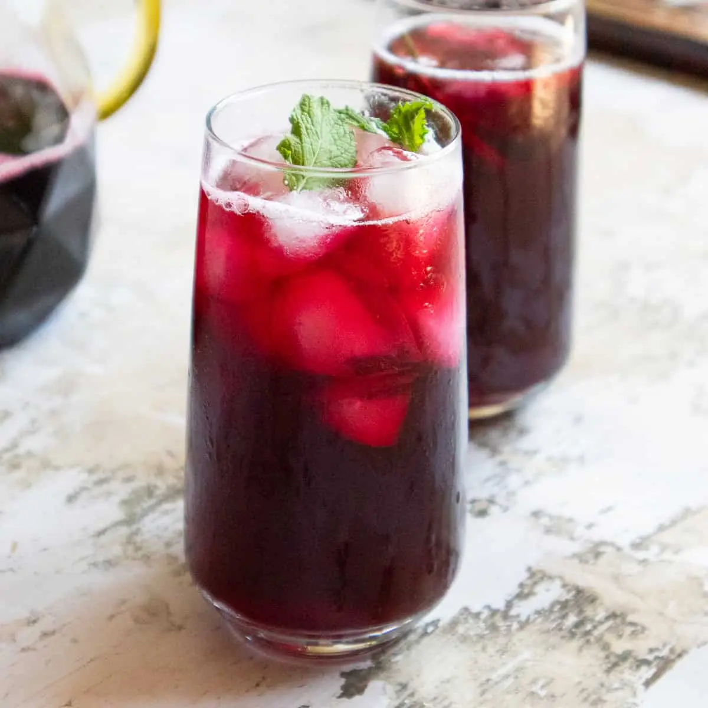
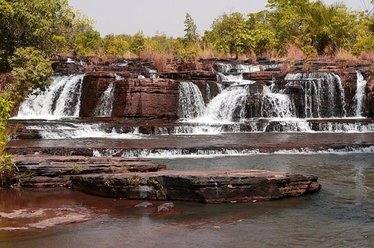
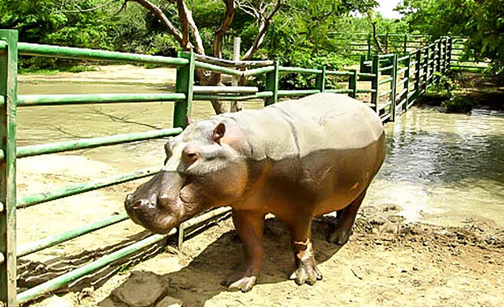
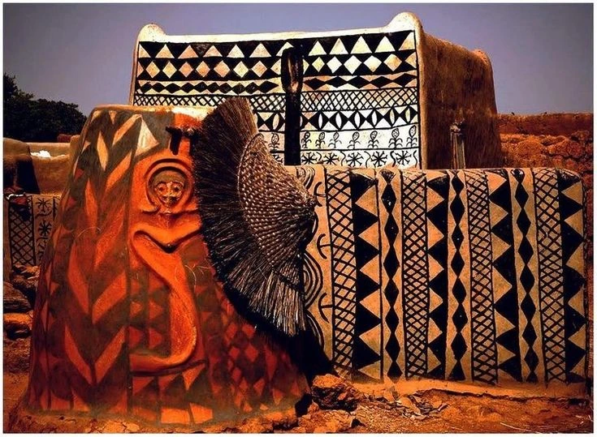